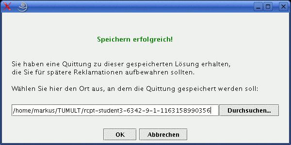
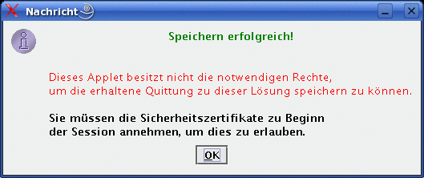
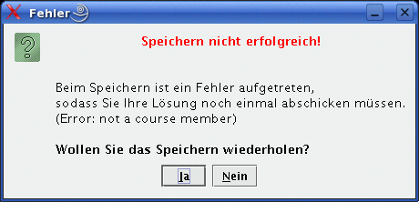
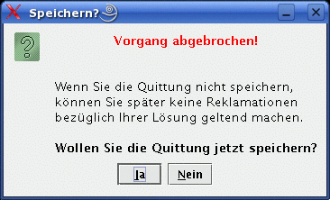
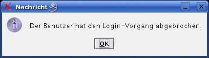
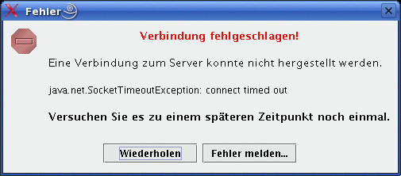
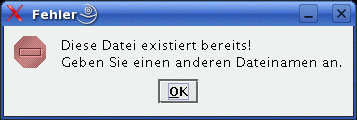
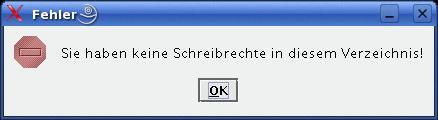
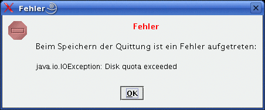

Übersicht > Fehlermeldungen
Fehler im Hausaufgaben-Modus
Dieses Fenster erscheint wenn der Server meldet, dass das Speichern der Lösung erfolgreich war
und dass eine Quittung zum Empfang bereit steht. Es wird ein Dateiname vorgeschlagen, der über das Textfeld
oder den "Durchsuchen..."-Button geändert werden kann. Durch Drücken von "OK" wird die
Quittung unter dem angegebenen Pfad gespeichert.

Dieses Fenster erscheint wenn der Server meldet, dass das Speichern der Lösung erfolgreich war aber dass dem Applet
zum Speichern der Quittung nicht genügend Benutzerrechte zur Verfügung stehen.

Dieses Fenster erscheint wenn der Server meldet, dass das Speichern der Lösung erfolgreich war
und dass keine Quittung zum Download zur Verfügung steht.
Dieses Fenster erscheint wenn der Server meldet, dass beim Speichern der Lösung ein Fehler aufgetreten ist
und dass die Antworten noch einmal gesendet werden müssen.
Die Fehlermeldung des Servers erscheint zusätzlich in diesem Fenster.
Der Speichervorgang kann durch Drücken des "JA"-Buttons wiederholt werden.

Dieses Fenster erscheint wenn der "Speichern erfolgreich, Quittung erhalten"-Dialog
abgebrochen werden soll. Durch Drücken von "Ja" gelangt man wieder zum vorherigen Speichern-Dialog,
"Nein" bricht das Speichern der Quittung ab.

Dieses Fenster erscheint wenn der Login-Dialog des JAPS-Client abgebrochen wurde, ohne dass der Login
durchgeführt wurde. Erscheint nur nach einem Timeout.

Dieses Fenster erscheint wenn eine Verbindung zum Server nicht hergestellt werden konnte oder wenn ein
Netzwerkfehler während der Verbindung unterläuft. In allen Fällen muss der Verbindungsaufbau
wiederholt werden.

Dieses Fenster erscheint wenn eine Quittung mit dem selben Namen im aktuellen Verzeichnis bereits existiert.
Dieses Fenster soll das Überschreiben von alten Quittungen verhindern.

Dieses Fenster erscheint wenn der Benutzer im aktuellen Verzeichnis nicht genügend Benutzerrechte besitzt,
um die Quittung abspeichern zu können.

Dieses Fenster erscheint wenn beim Speichern der Quittung auf dem lokalen Rechner ein Fehler auftritt.
Die Fehlermeldung erscheint zusätzlich in diesem Fenster.
